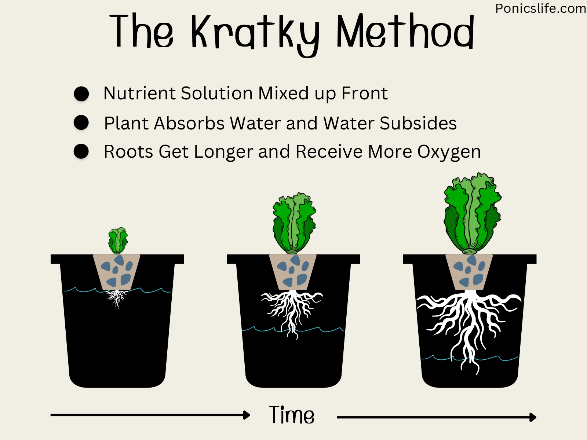
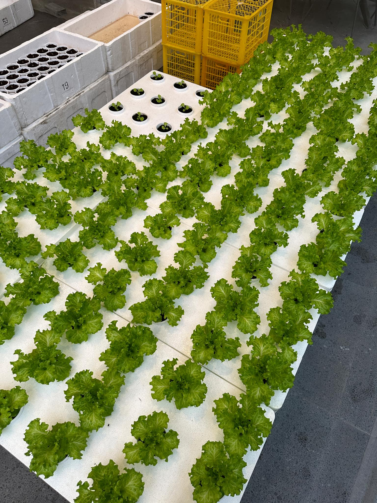
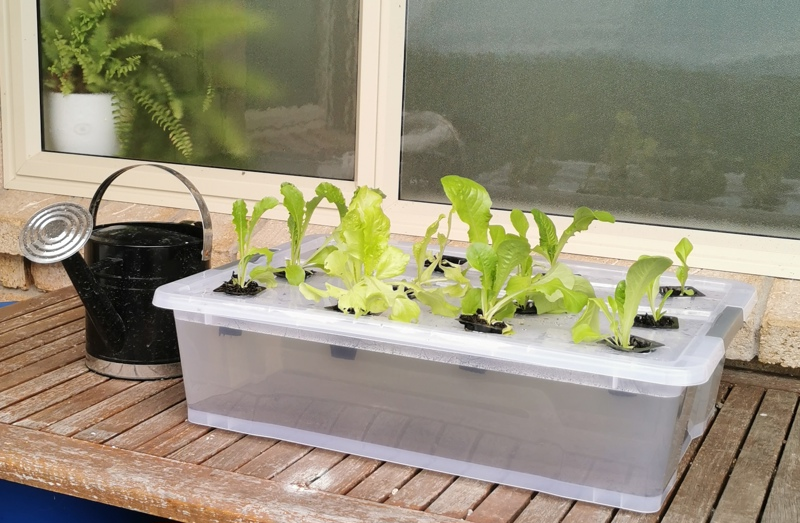

How to Build and Sustain a Kratky Hydroponics Unit at Home
Agriculture at Home
What is the Kratky Method?
This is a method of hydroponics that takes the least maintenance and cost. It's a passive hydroponics method
where plants grow in a nutrient-rich water solution without pumps, electricity, or constant monitoring and care. It is a great way for beginners
to start a hydroponics unit at home without being too costly and time consuming.
In this article, I will show you:
- Links to reliable products you can use in the Philippines
- How to set up your own hydroponics unit for raising lettuce
and
- How to grow high quality lettuce from seedling trays until harvest



LIST OF MATERIALS:
I. SEEDLING STAGE
- Start by filling your Seedling Tray to the top with Coco Pith that you made damp with some water. Don't make the coco pith too wet. Do NOT pack it too tight; just make sure there are no gaps in the soil.
- Put exactly TWO seeds into each cell in the tray. Drop them in the middle of each cell, push them down about 2 cm down into the soil, and cover them with the excess.
- Fill the Flat Tray with No Holes with water and place the lettuce tray on top of the flat tray.
- The nursery time period usually lasts 14 days.
- For the first 7 days, soak once every morning, making sure you give the tray enough water.
- For the following 7 days, soak the tray every morning and afternoon. Fill the flat tray with water every morning, and top it off in the afternoon.
- Additionally, if you notice the water doesn't get soaked up by the end of the day/soaking period, reduce the amount of water you use.
II. Preparing the Water
- Measure the volume of the water in liters equivalent to filling the Plant Box nearly full.
- Prepare the amount of your Nutrient Solution Liquids equivalent to the volume of water. For example: If you need 1.5 ml of nutrient solution for 1 L of water, and your box holds 60 L of water, then you should put 90 ml of each solution into the water.
- Test the water for its pH and PPM levels. For lettuce: PPM should ideally be 560-840; pH should ideally be 5.5-6.5
- Carefully adjust the pH level with your pH Down/Up Liquids according to the products' instructions.
III. TRANSPLANTING
After 2 weeks, each cell should have at least 1-2 lettuce sprouts. Each sprout should have ideally 4 leaves each.
- Prepare your Hydro Cups. Fill them around halfway up with new damp Coco Pith.
- Seperate the sprouts of each cell and place one lettuce sprout into a cup and use the old soil to stabilize the sprout upright. Make sure you dont break the roots and untangle them carefully.
- Finally, place your cups into the holes of each box.
- Lettuce should generally take around 3-6 weeks to grow fully before harvesting.
- The water of your plant box should be refilled/topped off every week or two.
- If you want to keep the cycle going, you should germinate some new seeds in your trays about a week before harvesting.
WW#3 for ETECH 110 - Made by Miguel Bautista - AFAACP-11B